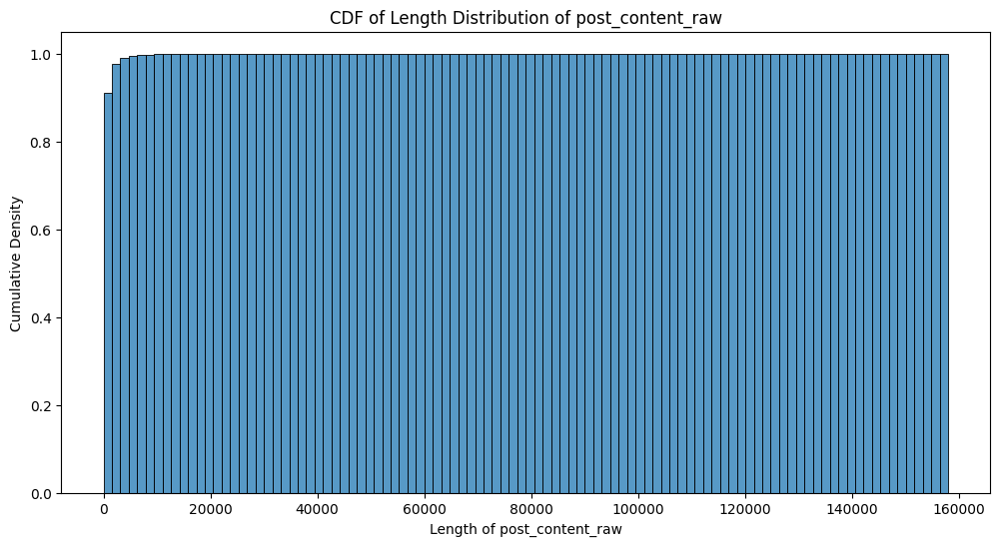

Cursor Forum Data Analysis#
inspired by this
# Imports
import json
import pandas as pd
import matplotlib.pyplot as plt
from bs4 import BeautifulSoup # Added for HTML cleaning
import seaborn as sns
# Define category mapping
CATEGORY_MAP = {
2: 'site-feedback',
4: 'general',
5: 'feature-request',
6: 'bug-report',
7: 'feedback',
8: 'help',
9: 'showcase',
11: 'announcements'
}
# Read the bug report data
with open('../data/full_data_2025_02_23_17:27.json', 'r') as f:
data = json.load(f)
# Create lists to store the extracted data
posts = []
# Process each discussion
for thread in data['discussions']:
# Discussion-level features (shared across all posts in thread)
discussion_features = {
'post_discussion_id': thread.get('id'),
'post_discussion_title': thread.get('title'),
'post_discussion_created_at': pd.to_datetime(thread.get('created_at')),
'post_discussion_views': thread.get('views'),
'post_discussion_reply_count': thread.get('posts_count'),
'post_discussion_like_count': thread.get('like_count'),
'post_discussion_participant_count': thread.get('participant_count'),
'post_discussion_word_count': float(thread.get('word_count', 0)),
'post_category_id': thread.get('category_id'),
'post_category_name': CATEGORY_MAP.get(thread.get('category_id')),
'post_discussion_tags': thread.get('tags', []),
'post_discussion_url': f"https://forum.cursor.com/t/{thread.get('slug')}/{thread.get('id')}",
}
# Extract tags (up to 4)
tags = thread.get('tags', [])
for i in range(4):
discussion_features[f'tag{i+1}'] = tags[i] if i < len(tags) else None
# Post-level features
for post in thread.get('post_stream', {}).get('posts', []):
post_data = {
**discussion_features, # Include all discussion features
'post_id': post.get('id'),
'post_author': post.get('username'),
'post_author_id': post.get('user_id'),
'post_created_at': post.get('created_at'),
'post_content': BeautifulSoup(post.get('cooked', ''), 'html.parser').get_text(),
'post_content_raw': post.get('cooked', ''),
'post_read_count': post.get('reads', 0),
'post_reply_count': post.get('reply_count', 0),
'post_number': post.get('post_number'),
'accepted_answer_post': float(post.get('accepted_answer', False)),
'post_url': f"https://forum.cursor.com/t/{thread.get('slug')}/{thread.get('id')}/{post.get('post_number')}",
}
posts.append(post_data)
df = pd.DataFrame(posts)
# Display basic information about the dataset
print("Dataset Info:")
print(f"Number of discussions: {len(data['discussions'])}")
print(f"Number of posts: {len(df)}")
print("\nDataFrame Head:")
df.head()
---------------------------------------------------------------------------
FileNotFoundError Traceback (most recent call last)
Cell In[3], line 2
1 # Read the bug report data
----> 2 with open('../data/full_data_2025_02_23_17:27.json', 'r') as f:
3 data = json.load(f)
5 # Create lists to store the extracted data
File /opt/hostedtoolcache/Python/3.9.21/x64/lib/python3.9/site-packages/IPython/core/interactiveshell.py:310, in _modified_open(file, *args, **kwargs)
303 if file in {0, 1, 2}:
304 raise ValueError(
305 f"IPython won't let you open fd={file} by default "
306 "as it is likely to crash IPython. If you know what you are doing, "
307 "you can use builtins' open."
308 )
--> 310 return io_open(file, *args, **kwargs)
FileNotFoundError: [Errno 2] No such file or directory: '../data/full_data_2025_02_23_17:27.json'
# Print summary stats
print("=== Dataset Summary ===")
print(f"Total posts: {len(df)}")
print(f"Total discussions: {df['post_discussion_id'].nunique()}")
print(f"Total users: {df['post_author_id'].nunique()}\n")
print(f"Date range: {df['post_created_at'].min()} to {df['post_created_at'].max()}")
=== Dataset Summary ===
Total posts: 37194
Total discussions: 9401
Total users: 9885
Date range: 2023-08-21T22:09:03.673Z to 2025-02-23T23:43:36.361Z
Sentiment Analysis#
Using Twitter-roBERTa-base for sentiment analysis, we generated a post_sentiment label (negative, positive, neutral) and post_sentiment_score confidence score for each post.
from transformers import pipeline
import torch
from tqdm.notebook import tqdm
def get_sentiment_batch(texts, batch_size=32, max_length=512):
"""
Analyze sentiment of texts in batches using CardiffNLP Twitter RoBERTa model.
Args:
texts: List of texts to analyze
batch_size: Number of texts to process at once
max_length: Maximum sequence length (will truncate longer sequences)
Returns: List of dictionaries with sentiment scores
"""
# Initialize the model (will download on first run)
sentiment_task = pipeline(
"sentiment-analysis",
model="cardiffnlp/twitter-roberta-base-sentiment-latest",
tokenizer="cardiffnlp/twitter-roberta-base-sentiment-latest",
device=0 if torch.cuda.is_available() else -1, # Use GPU if available
truncation=True,
max_length=max_length
)
results = []
# Process in batches with progress bar
for i in tqdm(range(0, len(texts), batch_size), desc="Analyzing sentiments"):
batch = texts[i:i + batch_size]
# Clean text
batch = [
' '.join([t if not t.startswith('@') else '@user' for t in str(text).split()])[:max_length]
for text in batch
]
batch = [
' '.join([t if not t.startswith('http') else 'http' for t in text.split()])[:max_length]
for text in batch
]
try:
batch_results = sentiment_task(batch)
results.extend(batch_results)
except Exception as e:
print(f"Error in batch {i}: {e}")
# Add neutral sentiment for failed items
results.extend([{'label': 'neutral', 'score': 0.5} for _ in range(len(batch))])
return results
# Apply optimized sentiment analysis
print("Analyzing sentiments with batching and truncation...")
df['sentiment'] = get_sentiment_batch(df['post_content'].tolist())
# Extract sentiment labels and scores
df['sentiment_label'] = df['sentiment'].apply(lambda x: x['label'])
df['sentiment_score'] = df['sentiment'].apply(lambda x: x['score'])
Analyzing sentiments with batching and truncation...
Some weights of the model checkpoint at cardiffnlp/twitter-roberta-base-sentiment-latest were not used when initializing RobertaForSequenceClassification: ['roberta.pooler.dense.bias', 'roberta.pooler.dense.weight']
- This IS expected if you are initializing RobertaForSequenceClassification from the checkpoint of a model trained on another task or with another architecture (e.g. initializing a BertForSequenceClassification model from a BertForPreTraining model).
- This IS NOT expected if you are initializing RobertaForSequenceClassification from the checkpoint of a model that you expect to be exactly identical (initializing a BertForSequenceClassification model from a BertForSequenceClassification model).
Device set to use cpu
# Print sentiment distribution
print("\nSentiment Distribution:")
print(df['sentiment_label'].value_counts())
# Visualize results
plt.figure(figsize=(10, 6))
df['sentiment_label'].value_counts().plot(kind='bar')
plt.title('Distribution of Sentiments')
plt.xlabel('Sentiment')
plt.ylabel('Count')
plt.tight_layout()
plt.show()
Sentiment Distribution:
sentiment_label
neutral 18952
negative 11796
positive 6446
Name: count, dtype: int64
# Get top and bottom posts by sentiment
print("\n=== Top 5 Most Positive Discussions ===")
top_posts = df.groupby('post_discussion_title').agg({
'sentiment_score': 'mean',
'post_discussion_views': 'first',
'post_discussion_reply_count': 'first'
}).sort_values('sentiment_score', ascending=False).head(5)
print(top_posts.to_string())
print("\n=== Top 5 Most Negative Discussions ===")
bottom_posts = df.groupby('post_discussion_title').agg({
'sentiment_score': 'mean',
'post_discussion_views': 'first',
'post_discussion_reply_count': 'first'
}).sort_values('sentiment_score', ascending=True).head(5)
print(bottom_posts.to_string())
=== Top 5 Most Positive Discussions ===
sentiment_score post_discussion_views post_discussion_reply_count
post_discussion_title
I stopped starting my coding days with checking Cursor forum. Good job with the latest patch! 0.984200 234 1
Short introduction - Hello folks 0.983756 59 1
Appreciation feedback 0.983639 61 4
Joining Cursor as an SDE 0.983206 229 1
Does Cursor offer a Business Plan API for Cursor Chat functionality 0.983114 59 1
=== Top 5 Most Negative Discussions ===
sentiment_score post_discussion_views post_discussion_reply_count
post_discussion_title
Learning to code with AI 0.392078 810 1
VertexAI (Gemini) and Composer 0.392228 7 1
I use sweetPad to build & run xcode ios project , but breakpoint is not work 0.401299 88 1
The debug panel button area switching status is abnormal. 0.401299 20 1
Command 'WSL: Connect to WSL using Distro..' resulted in error 0.401299 35 1
# Create cross-tabulation using category_id
sentiment_by_category = pd.crosstab(
index=df['post_category_name'],
columns=df['sentiment_label'],
normalize='index' # This normalizes by row (category)
).round(6)
print("Sentiment Distribution by Category Name:")
print(sentiment_by_category)
Sentiment Distribution by Category Name:
sentiment_label negative neutral positive
post_category_name
announcements 0.000000 1.000000 0.000000
bug-report 0.412713 0.481025 0.106262
feature-request 0.163103 0.486020 0.350877
feedback 0.335683 0.434361 0.229956
general 0.303986 0.528420 0.167594
help 0.232713 0.580906 0.186381
showcase 0.097421 0.415473 0.487106
site-feedback 0.209677 0.548387 0.241935
Vector Embeddings#
For calculating vector embeddings, Nomic Embed-Text v1.5 was ran locally with the help of text-embeddings-inference. Because of its Matryoshka resizable nature, its possible to use these embeddings in a bunch of future applications.
Nomic Embed v1.5 was largely selected due to its large context length.
# Import additional libraries for embeddings
from sentence_transformers import SentenceTransformer
import seaborn as sns
# Set basic plot style
plt.style.use('default')
# Cell - Analyze content length distribution
df['post_content_raw_length'] = df['post_content_raw'].apply(len)
plt.figure(figsize=(12, 6))
sns.histplot(
data=df['post_content_raw_length'],
bins=100,
kde=False,
cumulative=True,
stat='density'
)
plt.title('CDF of Length Distribution of post_content_raw')
plt.xlabel('Length of post_content_raw')
plt.ylabel('Cumulative Density')
plt.show()
# Cell - Generate embeddings
def generate_embeddings(texts):
# Initialize the model
model = SentenceTransformer('all-MiniLM-L6-v2') # Fast and good quality model
# Generate embeddings
embeddings = model.encode(
texts,
show_progress_bar=True,
batch_size=32 # Adjust based on your memory
).tolist()
return embeddings, embeddings, embeddings
# Generate embeddings for our content
print("Generating embeddings... this may take a few minutes...")
cluster_emb, class_emb, search_emb = generate_embeddings(df['post_content_raw'].tolist())
# Add embeddings to dataframe
df['post_content_cluster_embedding'] = cluster_emb
df['post_content_classification_embedding'] = class_emb
df['post_content_search_document_embedding'] = search_emb
# Display sample of embeddings
print("\nSample of generated embeddings:")
df[[
'post_content_cluster_embedding',
'post_content_classification_embedding',
'post_content_search_document_embedding'
]].head()

Generating embeddings... this may take a few minutes...
Sample of generated embeddings:
| post_content_cluster_embedding | post_content_classification_embedding | post_content_search_document_embedding | |
|---|---|---|---|
| 0 | [-0.07126212120056152, -0.06342405825853348, -... | [-0.07126212120056152, -0.06342405825853348, -... | [-0.07126212120056152, -0.06342405825853348, -... |
| 1 | [0.014518680982291698, 0.005969285499304533, 0... | [0.014518680982291698, 0.005969285499304533, 0... | [0.014518680982291698, 0.005969285499304533, 0... |
| 2 | [-0.07926061749458313, 0.06766100227832794, 0.... | [-0.07926061749458313, 0.06766100227832794, 0.... | [-0.07926061749458313, 0.06766100227832794, 0.... |
| 3 | [-0.00010644132271409035, 0.03789800405502319,... | [-0.00010644132271409035, 0.03789800405502319,... | [-0.00010644132271409035, 0.03789800405502319,... |
| 4 | [-0.06011117622256279, -0.007468045223504305, ... | [-0.06011117622256279, -0.007468045223504305, ... | [-0.06011117622256279, -0.007468045223504305, ... |
Vector Search#
# Import libraries for vector search
import numpy as np
from sklearn.metrics.pairwise import cosine_similarity
# Function to find similar posts
def find_similar_posts(df, query_id, n_results=5):
"""
Find similar posts using cosine similarity of embeddings
Args:
df: DataFrame containing the posts
query_id: ID of the post to find similar posts to
n_results: Number of similar posts to return (including the query post)
"""
# Get the query post's embedding
query_embedding = df[df['post_id'] == query_id]['post_content_search_document_embedding'].iloc[0]
# Convert all embeddings to numpy array for faster computation
all_embeddings = np.array(df['post_content_search_document_embedding'].tolist())
# Calculate cosine similarity
similarities = cosine_similarity([query_embedding], all_embeddings)[0]
# Get indices of most similar posts
most_similar_indices = similarities.argsort()[-n_results:][::-1]
# Get the similar posts
similar_posts = df.iloc[most_similar_indices]
# Add similarity scores
similar_posts = similar_posts.copy()
similar_posts['similarity_score'] = similarities[most_similar_indices]
return similar_posts
# Example usage - let's find posts similar to the first post in our dataset
query_post_id = df['post_id'].iloc[0] # Using first post as example
print("Query post:")
print("Title:", df[df['post_id'] == query_post_id]['post_discussion_title'].iloc[0])
print("Content:", df[df['post_id'] == query_post_id]['post_content'].iloc[0][:200], "...\n")
print("\nSimilar posts:")
similar_posts = find_similar_posts(df, query_post_id, n_results=5)
for _, post in similar_posts.iterrows():
print(f"\nTitle: {post['post_discussion_title']}")
print(f"Similarity score: {post['similarity_score']:.3f}")
print(f"Content preview: {post['post_content'][:150]}...")
Query post:
Title: Update: o3-mini pricing
Content: weve updated the pricing for o3-mini to be like haiku
1/3 fast request
$0.01 per request (usage based)
you can find all available models here: Cursor Models ...
Similar posts:
Title: Update: o3-mini pricing
Similarity score: 1.000
Content preview: weve updated the pricing for o3-mini to be like haiku
1/3 fast request
$0.01 per request (usage based)
you can find all available models here: Curs...
Title: O3-mini support
Similarity score: 0.760
Content preview: It doesnt seem to be out at the time of writing this. Once it is (and the pricing is clear) the Cursor team will look into adding o3-mini support....
Title: Add support for o3-mini-high
Similarity score: 0.755
Content preview: I recommend to indicate that it is the high reasoning mode in
Cursor Models
Update: o3-mini pricing
and in the Cursor app
Because the o3-mini mo...
Title: Please add OpenAI's o3-mini
Similarity score: 0.740
Content preview: o3-mini is not yet available via the API as far as I know, but once it is, and its pricing is clear, we will look at adding it to Cursor....
Title: Version of 03 mini?
Similarity score: 0.725
Content preview: According to our docs (Cursor Models), o3-mini counts as 1/3 of a fast premium request and costs $0.01 per request. The model always has high reason...
# Function to search posts using custom text
def search_posts_by_text(df, query_text, n_results=5):
"""
Search posts using a text query
Args:
df: DataFrame containing the posts
query_text: Text to search for
n_results: Number of results to return
"""
# Generate embedding for the query text
model = SentenceTransformer('all-MiniLM-L6-v2')
query_embedding = model.encode([query_text])[0]
# Convert all embeddings to numpy array
all_embeddings = np.array(df['post_content_search_document_embedding'].tolist())
# Calculate similarities
similarities = cosine_similarity([query_embedding], all_embeddings)[0]
# Get most similar posts
most_similar_indices = similarities.argsort()[-n_results:][::-1]
# Get the similar posts
similar_posts = df.iloc[most_similar_indices].copy()
similar_posts['similarity_score'] = similarities[most_similar_indices]
return similar_posts
# Example usage - search for posts about a specific topic
query = "Billing Issues"
print(f"Searching for: '{query}'\n")
similar_posts = search_posts_by_text(df, query)
for _, post in similar_posts.iterrows():
print(f"\nTitle: {post['post_discussion_title']}")
print(f"Similarity score: {post['similarity_score']:.3f}")
print(f"Content preview: {post['post_content'][:150]}...")
Searching for: 'Billing Issues'
Title: Fast request charged me yearly price
Similarity score: 0.771
Content preview: Anybody else facing this billing issue?...
Title: Bug: Reverted to Free Subscription After Subscribing to Cursor Business
Similarity score: 0.736
Content preview: Hey,
Sorry youre facing this, thanks for signing up to the business plan!
Billing issues are all handled on the hi@cursor.com email, if you could dro...
Title: Anyone else with Revolut getting payment flagged and card frozen?
Similarity score: 0.702
Content preview: Hey, for any billing issues, please contact us via email at hi@cursor.com as they can look into this further for you!...
Title: Need Help with Subscription Issues - Unexpected Cancellation & Refund
Similarity score: 0.699
Content preview: They contacted me via email,they said that there seems to be a sync issue between the billing system and my account status....
Title: Cursor AI on blacklist at my Bank
Similarity score: 0.693
Content preview: Hey,
Can you send me a message with the email address you attempted to use during billing? I will check for the transactions and see whats going on....
Preliminary Data Analysis#
Here, we attempt to give some basic information about the dataset and its features which one could potentially continue from.
# Correlation Analysis
import matplotlib.pyplot as plt
import numpy as np
import seaborn as sns
# First, let's see what features we have
print("Total features:", df.columns.__len__())
# Create a copy for analysis
og_df = df.copy(deep=True)
# Select only truly numerical columns
numerical_columns = [
'post_discussion_views',
'post_discussion_reply_count',
'post_discussion_like_count',
'post_discussion_participant_count',
'post_discussion_word_count',
'post_read_count',
'post_reply_count',
'post_number',
'accepted_answer_post',
'sentiment_score', # Using the score, not the dictionary
'post_content_raw_length'
]
# Create DataFrame with only numerical columns
df_numerical = df[numerical_columns]
# Print the columns we'll analyze
print("\nAnalyzing correlations between these features:")
print(df_numerical.columns.tolist())
# Calculate and plot correlation matrix
plt.figure(figsize=(12, 8))
corr = df_numerical.corr()
sns.heatmap(
corr,
annot=True, # Show correlation values
cmap="coolwarm", # Red-blue colormap
center=0, # Center the colormap at 0
fmt='.2f', # Show 2 decimal places
square=True # Make cells square
)
plt.title("Correlation Heatmap of Cursor Forum Metrics")
plt.xticks(rotation=45, ha='right') # Rotate x-axis labels
plt.yticks(rotation=0)
plt.tight_layout() # Adjust plot margins
plt.show()
# Print strongest correlations
print("\nStrongest correlations:")
# Get upper triangle of correlations
upper = corr.where(np.triu(np.ones(corr.shape), k=1).astype(bool))
# Stack and sort
strongest_corr = (
upper.stack()
.sort_values(ascending=False)
.drop_duplicates()
)
# Print top 10 correlations
for idx, value in strongest_corr[:10].items():
print(f"{idx[0]} vs {idx[1]}: {value:.3f}")
Total features: 34
Analyzing correlations between these features:
['post_discussion_views', 'post_discussion_reply_count', 'post_discussion_like_count', 'post_discussion_participant_count', 'post_discussion_word_count', 'post_read_count', 'post_reply_count', 'post_number', 'accepted_answer_post', 'sentiment_score', 'post_content_raw_length']

Strongest correlations:
post_discussion_reply_count vs post_discussion_participant_count: 0.916
post_discussion_like_count vs post_discussion_participant_count: 0.737
post_discussion_reply_count vs post_discussion_like_count: 0.730
post_discussion_reply_count vs post_discussion_word_count: 0.710
post_discussion_like_count vs post_read_count: 0.664
post_discussion_participant_count vs post_read_count: 0.618
post_discussion_reply_count vs post_read_count: 0.617
post_discussion_like_count vs post_discussion_word_count: 0.615
post_discussion_participant_count vs post_discussion_word_count: 0.597
post_discussion_reply_count vs post_number: 0.595
Volume of Posts Over Time#
# Time-based Sentiment Analysis
import pandas as pd
import matplotlib.pyplot as plt
# Convert post_created_at to datetime and create year_month column
df['post_created_at'] = pd.to_datetime(df['post_created_at'])
df['year_month'] = df['post_created_at'].dt.to_period('M')
# Count sentiment labels by month
colors = {'negative': 'red', 'neutral': 'blue', 'positive': 'green'}
sentiment_label_counts_by_month = (
df.groupby(['year_month', 'sentiment_label']).size().unstack(fill_value=0)
)
# Calculate proportions
total_posts_per_month = sentiment_label_counts_by_month.sum(axis=1)
sentiment_label_proportions_by_month = sentiment_label_counts_by_month.divide(
total_posts_per_month, axis=0
)
# Create stacked bar plot
plt.figure(figsize=(14, 8))
sentiment_label_counts_by_month.plot(
kind='bar',
stacked=True,
color=[colors[col] for col in sentiment_label_counts_by_month.columns],
)
plt.title('Sentiment Distribution in Cursor Forum Posts Over Time')
plt.xlabel('Month')
plt.ylabel('Number of Posts')
plt.xticks(rotation=45, ha='right')
plt.legend(title='Sentiment')
plt.grid(axis='y', linestyle='--', alpha=0.7)
plt.tight_layout()
plt.show()
# Print some statistics
print("\nSentiment Statistics:")
print("\nTotal posts per month:")
print(total_posts_per_month)
print("\nSentiment proportions by month:")
print(sentiment_label_proportions_by_month.round(2))
# Calculate overall sentiment distribution
print("\nOverall sentiment distribution:")
sentiment_distribution = df['sentiment_label'].value_counts(normalize=True)
for sentiment, proportion in sentiment_distribution.items():
print(f"{sentiment}: {proportion:.1%}")
/var/folders/hg/xlym54ps011_3xj339xh45fr0000gn/T/ipykernel_78241/474705622.py:7: UserWarning: Converting to PeriodArray/Index representation will drop timezone information.
df['year_month'] = df['post_created_at'].dt.to_period('M')
<Figure size 1400x800 with 0 Axes>
Sentiment Statistics:
Total posts per month:
year_month
2023-08 338
2023-09 640
2023-10 765
2023-11 609
2023-12 437
2024-01 662
2024-02 709
2024-03 915
2024-04 683
2024-05 780
2024-06 700
2024-07 776
2024-08 2093
2024-09 3629
2024-10 3671
2024-11 3291
2024-12 4071
2025-01 6323
2025-02 6102
Freq: M, dtype: int64
Sentiment proportions by month:
sentiment_label negative neutral positive
year_month
2023-08 0.18 0.62 0.20
2023-09 0.29 0.50 0.21
2023-10 0.27 0.52 0.22
2023-11 0.22 0.56 0.22
2023-12 0.35 0.48 0.17
2024-01 0.28 0.51 0.21
2024-02 0.26 0.57 0.18
2024-03 0.29 0.53 0.19
2024-04 0.31 0.53 0.16
2024-05 0.29 0.52 0.18
2024-06 0.32 0.53 0.15
2024-07 0.33 0.51 0.17
2024-08 0.33 0.49 0.18
2024-09 0.34 0.51 0.15
2024-10 0.34 0.50 0.16
2024-11 0.39 0.46 0.15
2024-12 0.33 0.51 0.16
2025-01 0.29 0.53 0.18
2025-02 0.31 0.51 0.18
Overall sentiment distribution:
neutral: 51.0%
negative: 31.7%
positive: 17.3%
Average Sentiment Over Time#
# Average Sentiment Over Time
import matplotlib.pyplot as plt
import matplotlib.dates as mdates
import pandas as pd
# Reset index if it was set before
df = df.reset_index()
# Convert to datetime if not already
df['post_created_at'] = pd.to_datetime(df['post_created_at'])
# Set the post_created_at column as the index
df.set_index('post_created_at', inplace=True)
# Create monthly sentiment counts
monthly_sentiment = (
df.resample('ME')['sentiment_label'].value_counts().unstack(fill_value=0)
)
# Define colors for sentiment
colors = {'negative': 'red', 'neutral': 'blue', 'positive': 'green'}
# Create the plot
plt.figure(figsize=(15, 8))
# Plot lines for each sentiment
for sentiment in monthly_sentiment.columns:
plt.plot(
monthly_sentiment.index,
monthly_sentiment[sentiment],
color=colors[sentiment],
label=sentiment,
marker='o', # Add markers for data points
markersize=4,
linewidth=2
)
# Format x-axis to show Month-Year
plt.gca().xaxis.set_major_formatter(mdates.DateFormatter('%b-%Y'))
plt.gca().xaxis.set_major_locator(mdates.MonthLocator(interval=1)) # Show every month
# Improve x-axis labels readability
plt.gcf().autofmt_xdate()
# Add labels and title
plt.title('Sentiment Trends in Cursor Forum Over Time')
plt.xlabel('Time')
plt.ylabel('Number of Posts')
# Add legend
plt.legend(title='Sentiment')
# Add grid for better readability
plt.grid(True, linestyle='--', alpha=0.7)
# Adjust layout
plt.tight_layout()
# Show the plot
plt.show()
# Print some insights
print("\nSentiment Trends Summary:")
print("\nPeak months for each sentiment:")
for sentiment in monthly_sentiment.columns:
peak_month = monthly_sentiment[sentiment].idxmax()
peak_count = monthly_sentiment[sentiment].max()
print(f"{sentiment}: {peak_month.strftime('%B %Y')} with {peak_count} posts")
print("\nMonthly averages:")
print(monthly_sentiment.mean().round(1))

Sentiment Trends Summary:
Peak months for each sentiment:
negative: February 2025 with 1907 posts
neutral: January 2025 with 3327 posts
positive: January 2025 with 1169 posts
Monthly averages:
sentiment_label
negative 620.8
neutral 997.5
positive 339.3
dtype: float64